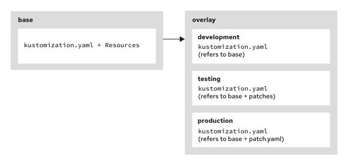

1. Manifest & Kustomize
imperative commands 命令式 means using CLIs directly. Disadvantage:
- Impaired reproducibility
- Lacking version control
- Lacking support for GitOps
declarative commands 声明式 is a way to manage resources using manifest file (YAML or JSON)
Both Kubernetes and Openshift have both imperative and declarative options. However in production, we recommend to use imperative for developing and experimenting, declarative for deploying, maintaining and documenting.
1. Manifest / 配置¶
Create Manifest¶
Where to get the YAML file?
- Use the YAML view of a resource in the web console.
-
Use imperative commands with the
--dry-run=clientoption to generate manifests. E.g.:kubectl create deployment hello-openshift -o yaml \ --image registry.ocp4.example.com:8443/redhattraining/hello-world-nginx:v1.0 \ --save-config \ --dry-run=client \ > ~/my-app/example-deployment.yaml- The
--save-configsaves the current config (in JSON format) in the annotationkubectl.kubernetes.io/last-applied-configuration. 其实就是一个版本控制的作用，用来记录上一次deployment的配置。 - The
--dry-run=clientoption prevents the command from creating resources in the cluster.
- The
Doc
Use kubectl explain deployment.spec.template.spec to see the details of the field deployment.spec.template.spec
Multiple src in single Manifest
Use a line of --- to separate the resources
Customize Manifest¶
你可以修改以下这些内容：
- Remove empty fields
- Changing attributes such as：
namespacespec.replicasspec.template.spec.containers[].ports.containerPort
Create src with Manifest¶
- Creating with 1 Manifest file (or a URL):
kubectl create -f resource.yaml kubectl apply -f resource.yaml kubectl create -f https://example.com/example-apps/deployment.yaml - Create with all Manifest files under one directory
kubectl create -R -f ~/my-app
Update src with Manifest¶
The kubectl apply command writes the Manifest contents to the kubectl.kubernetes.io/last-applied-configuration annotation.
The kubectl apply command uses the kubectl.kubernetes.io/last-applied-configuration annotation to identify the changes.
➡️ this annotation ist generated by --save-config in kubectl create command.
kubectl apply -f resource.yaml
Compare: apply vs create
➡️ oc apply is more powerful
kubectl apply |
kubectl create |
|
|---|---|---|
| Type | declarative | imperative |
| Consider the current state of a live resource? | Yes, compare: 1.Live configuration 2.Manifest file 3.Configuration in the annotation last-applied-configuration |
No |
| Can update a live resource? | Yes | No |
rollout
If an updated Manifest changes only values in Secret or ConfigMap, the updated Manifest does NOT generate new pods automatically. Instead:
- use
oc rollout restart deployment/deployment-nameto force the restart. - if
spec.replica== 1, you can also delete the previous pod.
Patch Manifest¶
The oc patch command updates or adds fields in an existing object:
- from json
oc patch deployment hello -p \ '{"spec":{"template":{"spec":{"resources":{"requests":{"cpu": "100m"}}}}}}' - from a patch file:
oc patch deployment hello --patch-file ~/volume-mount.yaml
Validate Manifest¶
--dry-run=server: submits a server-side request without persisting the resource.--validate=true: uses a schema to validate the input and fails the request if it is invalid.
Compare: server vs client
两者都不会真正创建或更新资源。
--dry-run=client |
--dry-run=server |
|
|---|---|---|
| where? | 在本地进行验证，不会与 Kubernetes 服务器交互。 | 在服务器端进行验证。它将把配置文件发送到 Kubernetes API 服务器，由服务器检查文件内容是否在集群中有效（例如，字段值是否正确、资源是否存在等） |
| suitable for | 检查 YAML 文件的基本格式和结构，适合快速检查配置文件是否有明显错误 | 更严格，适合需要精确验证的场景 |
Compare Manifest¶
Use the oc diff -f .（或kubectl diff -f .） command to review differences between live objects and manifests in current directory(.). ➡️ 只是比较，不进行实质更改
2. Kustomize¶
Kustomize 是一个开源的Kubernetes 配置管理工具，用于对Kubernetes 清单文件进行自定义和修改。 它允许用户通过分层和声明式的方式管理和定制应用程序的配置，而无需直接修改原始的清单文件，促进了配置的复用和可维护性。
- development
- staging
- testing
- production
➡️ Both the kubectl and oc commands integrate the Kustomize tool.
Files¶
Base¶
The kustomization.yaml file in the root filder has a list resource field to include all resource files. E.g.:
# result of `tree .`
base
├── configmap.yaml
├── deployment.yaml
├── secret.yaml
├── service.yaml
├── route.yaml
└── kustomization.yaml
# kustomization.yaml
apiVersion: kustomize.config.k8s.io/v1beta1
kind: Kustomization
resources:
- configmap.yaml
- deployment.yaml
- secret.yaml
- service.yaml
- route.yaml
Overlays¶
Overlays overwrites some setting without modifying the original Base. Each Overlays contains a kustomization.yaml file.

Relationship: Base + Overlays
- The kustomization.yaml file can refer to one or more directories as bases.
- Multiple overlays can use a common base kustomization directory.
# result of `tree .`
base
├── configmap.yaml
├── deployment.yaml
├── secret.yaml
├── service.yaml
├── route.yaml
├── kustomization.yaml
overlay
└── development
└── kustomization.yaml
└── testing
└── kustomization.yaml
└── production
├── kustomization.yaml
└── patch.yaml
# overlays/development/kustomization.yaml
apiVersion: kustomize.config.k8s.io/v1beta1
kind: Kustomization
namespace: dev-env
resources:
- ../../base
extra Keys provided by Kustomize
| Field | Description |
|---|---|
namespace |
Set a specific namespace for all resources. |
namePrefix |
Add a prefix to the name of all resources. |
nameSuffix |
Add a suffix to the name of all resources. |
commonLabels |
Add labels to all resources and selectors. |
commonAnnotations |
Add annotations to all resources and selectors. |
Patch¶
Besides overlays, one can also use patching for customizization. The patches mechanism has several important keys: patch, target and path.
Way 1: patch and target
apiVersion: kustomize.config.k8s.io/v1beta1
kind: Kustomization
namespace: test-env
# (1) list of patches
patches:
- patch: |-
# (2)
- op: replace
path: /metadata/name
value: frontend-test
target: # (3)
kind: Deployment
name: frontend
- patch: |- # (4)
- op: replace
path: /spec/replicas
value: 15
target:
kind: Deployment
name: frontend
resources: # (5)
- ../../base
commonLabels: # (6)
env: test
Explaination
(1) The patches field contains a list of patches.
(2) The patch field defines operation(op), path, and value. In this example, the name changes to frontend-test.
(3) The target field specifies the kind and name of the resource to apply the patch. In this example, you are changing the frontend deployment name to frontend-test.
(4) This patch updates the number of replicas of the frontend deployment.
(5) The frontend-app/overlay/testing/kustomization.yaml file uses the base kustomization file at ../../base to create an application.
(6) The commonLabels field adds the env: test label to all resources.
Way 2: path
The patch.yaml file has the following content:
apiVersion: apps/v1
kind: Deployment
metadata:
name: frontend-prod
spec:
replicas: 5
apiVersion: kustomize.config.k8s.io/v1beta1
kind: Kustomization
namespace: prod-env
# (1) list of patches
patches:
# (2) path field of the file
- path: patch.yaml
target: # (3)
kind: Deployment
name: frontend
options:
allowNameChange: true # (4)
resources: # (5)
- ../../base
commonLabels: # (6)
env: prod
Explaination
(1) The patches field lists the patches that are applied by using a production kustomization file.
(2) The path field specifies the name of the patching YAML file.
(3) The target field specifies the kind and name of the resource to apply the patch. In this example, you are targeting the frontend deployment.
(4) The allowNameChange field enables kustomization to update the name by using a patch YAML file.
(5) The frontend-app/overlay/production/kustomization.yaml file uses the base kustomization file at ../../base to create an application.
(6) The commonLabels field adds an env: prod label to all resources.
CLIs¶
E.g.: Taking overlay/production as the kustomization directory we want to use:
| Command | Description |
|---|---|
kubectl kustomize overlay/production |
processes the Kustomize overlay located in the directory overlay/production and outputs the resulting Kubernetes manifests. |
kubectl apply -k overlay/production |
update/create resources.-k flag means: applies a kustomization |
oc delete -k overlay/production |
delete resources that were deployed by using Kustomize |
Generator¶
Kustomize has configMapGenerator and secretGenerator fields that generate configmap and secret resources. Generators help to manage the content of configmaps and secrets, by taking care of encoding and including content from other sources.
configMapGenerator¶
The Kustomize's configmapGenerator can generates cm in 3 ways. see example：
# kustomization.yaml
apiVersion: kustomize.config.k8s.io/v1beta1
kind: Kustomization
namespace: hello-stage
resources:
- ../../base
configMapGenerator:
- name: configmap-1 # 1️⃣ from file
files:
- application.properties
- name: configmap-2 # 2️⃣ from env
envs:
- configmap-2.env
- name: configmap-3 # 3️⃣ from literal key-value pair
literals:
- name="configmap-3"
- description="literal key-value pair"
In the deployment file uses the generated configmap:
apiVersion: apps/v1
kind: Deployment
metadata:
name: hello
labels:
app: hello
name: hello
spec:
...output omitted...
spec:
containers:
- name: hello
image: quay.io/hello-app:v1.0
env:
- name: MY_MESSAGE
valueFrom:
configMapKeyRef:
name: configmap-1 # <-- Use the CM by name
key: msg
- name: MSG_ENABLE
valueFrom:
configMapKeyRef:
name: configmap-1
key: enable
Note
- Any change in the configuration map triggers a rolling update!
- the
configmapgenerated by Kustomize Generator behaves a bit differently → Kustomize appends a hash to the name like this:apiVersion: v1 data: application.properties: | Day=Monday Enable=True kind: ConfigMap metadata: name: configmap-1-5g2mh569b5 # 1️⃣ from file --- apiVersion: v1 data: Enable: "True" Greet: Welcome kind: ConfigMap metadata: name: configmap-2-92m84tg9kt # 2️⃣ from env --- apiVersion: v1 data: description: literal key-value pair name: configmap-3 kind: ConfigMap metadata: name: configmap-3-k7g7d5bffd # 3️⃣ from literal key-value pair --- ...output omitted...
secretGenerator¶
The Kustomize's secretGenerator can generates secret also in 3 ways: file, env, or literals.
generatorOptions¶
This generatorOptions can define alternative behavior of the *Generators. For example:
1. disable hash suffix¶
Why hash suffix are needed?
Workload resources such as deployments do not detect any content changes to configMaps and secrets. Any changes to a configMaps or secret do not apply automatically.
Because the generators append a hash, when you update the configuration map or secret, the resource name changes. This change triggers a rollout.
In some case, the hash suffix is not needed. One can disable it with the generatorOptions:
generatorOptions:
disableNameSuffixHash: true
# The Generators:
configMapGenerator:
- name: my-configmap
literals:
- name="configmap-3"
- description="literal key-value pair"
Warning
Global generatorOptions field OVERRIDES local disableNameSuffixHash settings: 最终生成的cm还是disableNameSuffixHash: true
apiVersion: kustomize.config.k8s.io/v1beta1
kind: Kustomization
generatorOptions:
disableNameSuffixHash: true # Global
configMapGenerator:
- name: global-config
literals:
- key1=value1
options:
disableNameSuffixHash: false # Local
annotations:
createdBy: "local-options"
labels:
environment: "test"
2. Add labels/annotations¶
# 这个标签将添加到当前文件中所有的 ConfigMap 和 Secret 中。
generatorOptions:
labels:
fruit: apple
annotations:
note: project-on-cloud
Tips & Tricks¶
watch
watch -d oc get deployments,pods
The watch tool comes from the procps-ng package, which is commonly included in Linux distributions. It delivers real-time updates.
-dhighlights the difference
➡️ Use Ctrl+C to exit the watch model